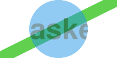

http://orcid.org/0000-0002-3224-8858
http://orcid.org/0000-0002-3224-8858
by Paul Murrell
http://orcid.org/0000-0002-3224-8858
Version 1: Wednesday 01 December 2021

This document
by Paul
Murrell is licensed under a Creative
Commons Attribution 4.0 International License.
This document describes an extension of the support for masks in R graphics to allow luminance masks as well as alpha masks.
These features are available in the development version of R (to become 4.2.0).
R users wanting to try out the new graphics features should start with the User API Section, which provides a quick introduction to the new R-level interface.
Maintainers of R packages that provide R graphics devices should read the Device API Section, which provides a description of the required changes to R graphics devices.
Luminance masks are currently only available on the
pdf() graphics device.
Graphics devices from other R packages should
be reinstalled and will not produce the correct output until
(or unless)
the package maintainer adds support.
Changes to the graphics engine in R 4.1.0 added support for gradient and pattern fills, clipping paths, and masks (Murrell, 2020). The following example demonstrates the use of a mask.
The drawing we will use the mask on is a simple piece of text on a coloured background. We will refer to this as the "test image".
library(colorspace) bg <- rectGrob(gp=gpar(col=NA, fill=4)) tg <- textGrob("masked", gp=gpar(cex=3, fontface="bold", col=darken(4, .7))) testGrob <- gTree(children=gList(bg, tg)) grid.group(testGrob)
The mask is a circle with a semitransparent fill. A thick green line is drawn first so that we can see that the circle is semitransparent.
alphaCircle <- circleGrob(gp=gpar(col=NA, fill=rgb(0,0,0,.5))) grid.segments(gp=gpar(col=3, lwd=20)) grid.draw(alphaCircle)
The following code enforces a mask based on the semitransparent circle and then draws the test image. This mask is called an "alpha" mask because the semitransparency (alpha channel) of the mask dictates how the test image gets drawn. In this case, where the circle overlaps the test image, the test image becomes semitransparent because the circle is semitransparent. Outside of the mask, nothing is drawn.
grid.segments(gp=gpar(col=3, lwd=20)) pushViewport(viewport(mask=alphaCircle)) grid.group(testGrob)
The following code shows a slightly more complex mask. This time the mask is a circle with a semitransparent fill and a thick opaque border.
solidCircle <- circleGrob(gp=gpar(col="black", lwd=20, fill=rgb(0,0,0,.5))) grid.segments(gp=gpar(col=3, lwd=20)) grid.draw(solidCircle)
The following code enforces this more complex mask and then draws the test image again. This is also an alpha mask so the semitransparency of the mask is transferred to the test image. The result is similar to the previous example, except that, where the opaque circle border overlaps the test image, the test image is drawn opaque.
grid.segments(gp=gpar(col=3, lwd=20)) pushViewport(viewport(mask=solidCircle)) grid.group(testGrob)
Some graphics languages, like Adobe Portable Document Format (PDF) (Adobe Systems Incorporated, 2001) and Cascading Style Sheets (CSS) (Bos et al., 1998) allow for another type of mask called a "luminance" mask. In a luminance mask, the luminance (greyscale values) of the mask, rather than the semitransparency of the mask, dictates how other shapes will be drawn.
This document describes the extension of mask support in R graphics to allow for luminance masks as well as alpha masks.
Since the release of R version 4.1.0, the viewport() function
in the 'grid' package has had a mask argument.
If the value of that argument is a 'grid' grob, that grob
is used as the basis for an alpha mask.
A new function, as.mask(), has been added so that
we can associate a grob with a mask type. For example, the
following code defines a luminance mask that is based
on a circle with a grey fill and a thick white border.
luminanceCircle <- circleGrob(gp=gpar(col="white", lwd=20, fill="grey50")) luminanceMask <- as.mask(luminanceCircle, type="luminance")
The following code draws the circle that we are using as a luminance mask. This is quite different from the previous alpha mask because it is completely opaque; the green line drawn in the background is not visible beneath the mask.
grid.segments(gp=gpar(col=3, lwd=20)) grid.draw(luminanceCircle)
The mask argument to viewport() will now
accept an object created with as.mask() as well as
a simple grob.
The following code pushes a viewport to enforce the luminance mask
and then draws the test image that we have used before.
pdf("luminance-mask.pdf", width=2, height=1) grid.segments(gp=gpar(col=3, lwd=20)) pushViewport(viewport(mask=luminanceMask)) grid.group(testGrob) dev.off()
The result is the same as the last alpha mask example, but in this case the semitransparency of the test image has been derived from the greyscale values of the luminance mask. Where the mask is white, the test image is drawn opaque and, where the mask is grey, the test image is drawn semitransparent.
The following code produces the same result as the first alpha mask example, but using a luminance mask instead. This time the mask is just a grey circle (with no border).
luminanceCircle <- circleGrob(gp=gpar(col=NA, fill="grey50")) luminanceMask <- as.mask(luminanceCircle, type="luminance")
grid.segments(gp=gpar(col=3, lwd=20)) grid.draw(luminanceCircle)
The following code pushes a viewport to enforce the luminance mask and then draws the test image again. The result is the same as the first alpha mask example, but this time the test image is semitransparent where it overlaps with the circle because the circle is filled with grey.
pdf("luminance-mask-2.pdf", width=2, height=1) grid.segments(gp=gpar(col=3, lwd=20)) pushViewport(viewport(mask=luminanceMask)) grid.group(testGrob) dev.off()

There is no change required to graphics devices as a result of this change. However, devices that support masks should now inspect the type of a mask to check whether it is an alpha mask or a luminance mask.
The first argument to dev->setMask() is an R function
that defines the mask
(as before), but this function now has a "type"
attribute.
The new R_GE_maskType() function, given the R function
that is passed in to dev->setMask(),
returns an integer representing the
type of mask. Integer constants
R_GE_alphaMask and R_GE_luminanceMask
are provided for devices
to switch between the two types of mask.
It is now possible to work with luminance masks (as well as alpha masks) in R graphics. As with other recent expansions of the R graphics capabilities, this hopefully allows users to produce images purely in code rather than having to resort to manual, post-hoc editing of an R plot in other GUI software.
One reason why luminance masks in particular are useful is because it is sometimes simpler to define a luminance mask than it is to define an alpha mask. For example, the following code defines a luminance mask that consists of a circle filled in white with a thick grey border and a thick, vertical, grey line running through its centre.
luminanceGrob <- gTree(children=gList(circleGrob(), segmentsGrob(.5, 0, .5, 1)), gp=gpar(col="grey50", lwd=20, fill="white")) luminanceMask <- as.mask(luminanceGrob, type="luminance")
grid.segments(gp=gpar(col=3, lwd=20)) grid.draw(luminanceGrob)
When we enforce this mask it produces semitransparency in all grey regions and opacity in all white regions, as shown below.
pdf("luminance-mask-3.pdf", width=2, height=1) grid.segments(gp=gpar(col=3, lwd=20)) pushViewport(viewport(mask=luminanceMask)) grid.group(testGrob) dev.off()
Producing an equivalent alpha mask is difficult. For example, in the naive approach below, we define a mask based on an opaque filled circle with a semitransparent thick border and a semitransparent vertical line on top. Note that the important feature in an alpha mask is the mask transparency; an opaque red is equivalent to an opaque black (we use red here because it makes it easier to see the semitransparent border and line drawn on top).
circle <- circleGrob(gp=gpar(col=NA, fill=2)) border <- circleGrob(gp=gpar(col=rgb(0,0,0,.5), lwd=20, fill=NA)) line <- segmentsGrob(.5, 0, .5, 1, gp=gpar(col=rgb(0,0,0,.5), lwd=20)) alphaMask <- gTree(children=gList(circle, border, line)) grid.segments(gp=gpar(col=3, lwd=20)) grid.draw(alphaMask)
If we use this mask on the test image, we get a very different result compared to the previous luminance mask. This alpha mask is opaque wherever the red circle is drawn and so the test image is opaque wherever the red circle is drawn. Only the parts of the semitransparent border that stick out past the red circle result in a semitransparent test image. In essence, the proble is that it is difficult to reduce the transparency of regions of the mask by adding more drawing.
grid.segments(gp=gpar(col=3, lwd=20)) pushViewport(viewport(mask=alphaMask)) grid.group(testGrob)
Another general benefit of adding luminance masks, and other sophisticated graphics features, is that this expands the "vocabulary" of R graphics. It becomes possible to express new graphical results and it becomes possible to think about new solutions to graphical problems.
For example, the pdf() device does not support
many compositing operators, such as the "clear" operator.
The following code shows an example of the "clear" operator,
on a graphics device
based on the Cairo graphics library (Packard et al., 2021).
Here we are drawing a circle on top of a rectangle using
the "clear" operator, so the circle takes a "bite" out of the
bottom-right corner of the rectangle.
grid.group(circleGrob(2/3, 1/3, r=.3, gp=gpar(fill="black")), "clear", rectGrob(1/3, 2/3, .5, .5, gp=gpar(col=darken(4, .5), lwd=10, fill=4)))
The pdf() device does not produce the correct result
from the code above (because it does not support the "clear" operator).
However, it is easy to get the same result using a luminance mask.
For example, the code below creates a mask that is white everywhere with a black circle drawn in the bottom-right corner.
grob <- gTree(children=gList(rectGrob(gp=gpar(col=NA, fill="white")), circleGrob(2/3, 1/3, r=.3, gp=gpar(fill="black")))) grid.draw(grob)
If we push a viewport with that mask and draw the blue rectangle, the mask takes a "bite" out of the bottom-right corner of the rectangle, giving the same result as the "clear" operator.
pdf("clear-mask.pdf", width=2, height=2) pushViewport(viewport(mask=as.mask(grob, "luminance"))) grid.rect(1/3, 2/3, .5, .5, gp=gpar(col=darken(4, .5), lwd=10, fill=4)) dev.off()
As another example, we have just seen that it is not straightforward to
produce an alpha mask that corresponds to a relatively straightforward
luminance mask. Because luminance masks are only available on
the pdf() device, this means that
we cannot use a luminance mask
to produce the same result on a Cairo-based device.
However, on Cairo-based devices, we can use compositing operators
that are not available on the pdf() device, e.g.,
the "source" operator
(see Murrell, 2021b).
The following code demonstrates that we can produce an alpha
mask that is equivalent to the luminance mask if we combine the circle,
the semitransparent thick border, and the semitransparent vertical line
using the "source" operator. Using the "source"
operator means that, for example, when we add the border to the
circle, the border replaces the circle wherever the two
overlap. In this way, we can replace the opaque circle with the
semitransparent border (where they overlap) and we can replace the
opaque circle with the vertical line in the same way.
alphaMask <- groupGrob(line, "source", groupGrob(border, "source", circle))
grid.segments(gp=gpar(col=3, lwd=20)) grid.draw(alphaMask)
The result from using this alpha mask is the same as the result that we saw from using the luminance mask.
grid.segments(gp=gpar(col=3, lwd=20)) pushViewport(viewport(mask=alphaMask)) grid.group(testGrob)
That is not a demonstration of using a luminance mask to solve a problem (in fact, a luminance mask created the problem - how to produce the same effect as a luminance mask on a graphics device that does not support luminance masks!). However, it is a demonstration of the general idea that having access to more sophisticated graphical tools makes it possible for us to think of new solutions to problems.
The major limitation of luminance masks in R graphics
is that they are only
supported on the pdf() graphics device so far.
Cairo-based graphics devices
will ignore luminance masks (with a warning).
Other graphics devices within 'grDevices' will just silently
ignore masks altogether.
The 'ragg' device (Pedersen and Shemanarev, 2021) has added support for alpha masks
so it will hopefully also be able to support luminance masks.
Another limitation is that luminance masks are only available via the 'grid' package. There is no user interface for the 'graphics' package. The 'gridGraphics' package (Murrell and Wen, 2020) provides a workaround, allowing 'graphics' output to be converted to 'grid' output.
In time, it may be that the 'ggplot2' package (Wickham, 2016) will provide a way to make use of masks; in the meantime, the 'gggrid' package (Murrell, 2021a) provides a simple interface for adding 'grid' output to a 'ggplot2' plot.
The examples and discussion in this report relate to the development version of R (specifically revision 81125), which will probably become R version 4.2.0.
This report was generated within a Docker container (see Resources section below).
Murrell, P. (2021). "Luminance Masks in R Graphics" Technical Report 2021-0?, Department of Statistics, The University of Auckland. Version 1. [ bib | DOI | http ]
This document
by Paul
Murrell is licensed under a Creative
Commons Attribution 4.0 International License.